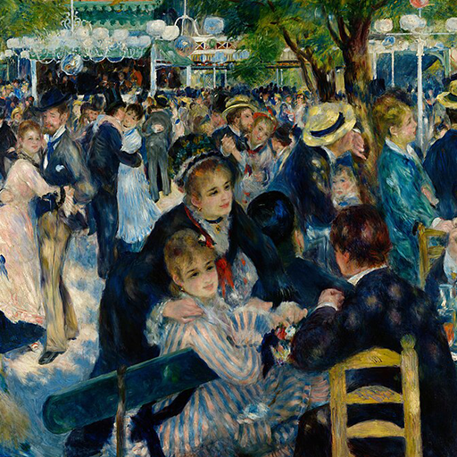

第58卦 兌為澤：笑，是真的
上卦：澤（☱） ・ 下卦：澤（☱）

核心意義
兩澤相連，彼此滋潤，這是關於喜悅與交流的時刻。喜悅來自真誠的連結，而非討好或勉強；與人分享快樂、坦率表達感受，同時守住言語的界線，不讓喜悅流於浮誇或口舌之快。
「我以喜悅之心與人交流，在真誠的連結中共享愉悅。」
祝福
願你的生活充滿真誠的喜悅，也被真心相待的朋友圍繞著。
五大類別指引
感情
關係中正洋溢著愉悅的氛圍，交流順暢、彼此都能帶來快樂。這是關係加溫的好時機；多分享開心的事、坦率表達你的感受，讓喜悅成為你們之間最自然的語言。
多分享開心的事，坦率表達感受：
- 讓喜悅成為自然的語言。
- 關係在愉悅中自然加溫。
事業
工作氛圍正處於和諧愉快的狀態，溝通順暢、合作愉快。利用這份好氣氛推進事務；多肯定同事的貢獻、坦率表達你的想法，愉悅的團隊往往有最好的生產力。
利用和諧氣氛推進事務：
- 多肯定同事的貢獻。
- 愉悅的團隊有最好的生產力。
健康
心情的愉悅會直接反映在健康上，笑口常開是最好的養生。此刻適合多做讓你開心的事；與好友相聚、培養興趣、安排愉快的活動，讓喜悅成為身心最好的滋養。
多做讓你開心的事，培養興趣：
- 與好友相聚，安排愉快的活動。
- 喜悅是最好的身心滋養。
財運
財務上有喜悅的消息或值得慶祝的進展，可能是意外的收入或滿意的回報。開心之餘記得理性；把這份喜悅化為儲蓄與規劃的動力，讓好心情成為理財的助力。
把喜悅化為儲蓄與規劃的動力：
- 意外之財先存一部分。
- 好心情成為理財的助力。
人際
你的人際正處於愉快的交流期，與人相處充滿笑聲與共鳴。這是擴展與加深關係的好時機；主動分享歡樂、真誠讚美他人，你會發現喜悅是最有感染力的語言。
主動分享歡樂，真誠讚美他人：
- 擴大愉快的交流圈。
- 喜悅是最有感染力的語言。